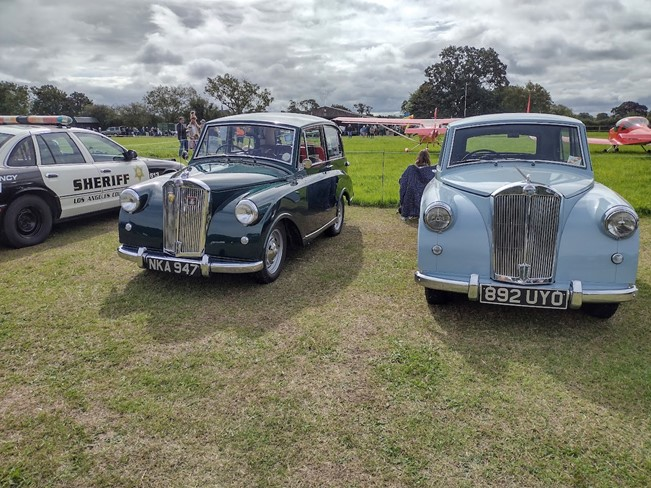

<link href="{{ site.baseurl }}/events/article.css" rel="stylesheet" type="text/css">
<main>
    <article>
        <ol id="breadcrumb">
            <li>
                <a href="{{ site.baseurl }}/">Home</a>
            </li>
            <li>
                <a href="{{ site.baseurl }}/events">Events</a>
            </li>
            <li>
                <a href="{{ site.baseurl }}/events/local">Local</a>
            </li>
            <li>Stoke Golding Airfield STIFI 2023</li>
        </ol>
        <div id="content">
            <h1>Stoke Golding Airfield STIFI (Stoke Golding Informal Fly In), Warwickshire</h1>
            <h2>27<sup>th</sup> September 2018</h2>
            <h3>Report by Paul Burgess</h3>
            <p>The picture attached of is of Paul Burgess’s Mayflower (NKA 947) together with Phil Achurch’s Mayflower (892 UYO) in typical bank holiday weekend weather at the Stoke Golding Airfield STIFI (Stoke Golding Informal Fly In) on Sunday 27<sup>th</sup> August.</p>
            
            <p>I hope your cars are up to scratch with the Sherif parked next to you! ED.</p>
        </div>
    </article>
    <aside>
        <h2>Members’ cars in attendance</h2>
        <ul class="disableListStyles">
            <li>
                <h3>Paul Burgess</h3>
                <div>
                    <div class="numberPlateMarker">NKA 947</div>
                </div>
            </li>
            <li>
                <h3>Phil Achurch</h3>
                <div>
                    <div class="numberPlateMarker">892 UYO</div>
                </div>
            </li>
        </ul>
    </aside>
</main>
